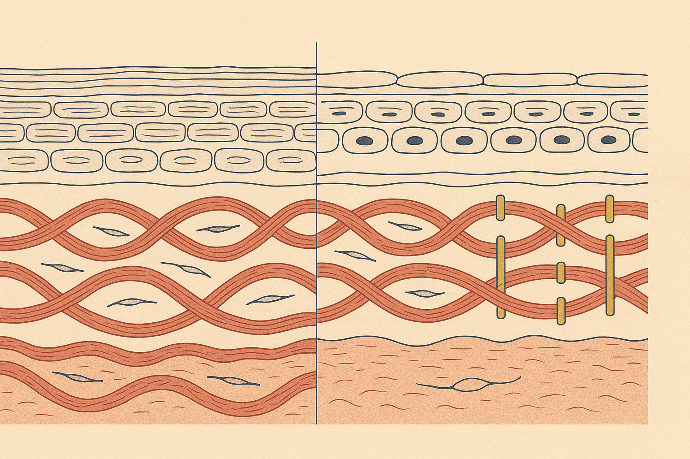
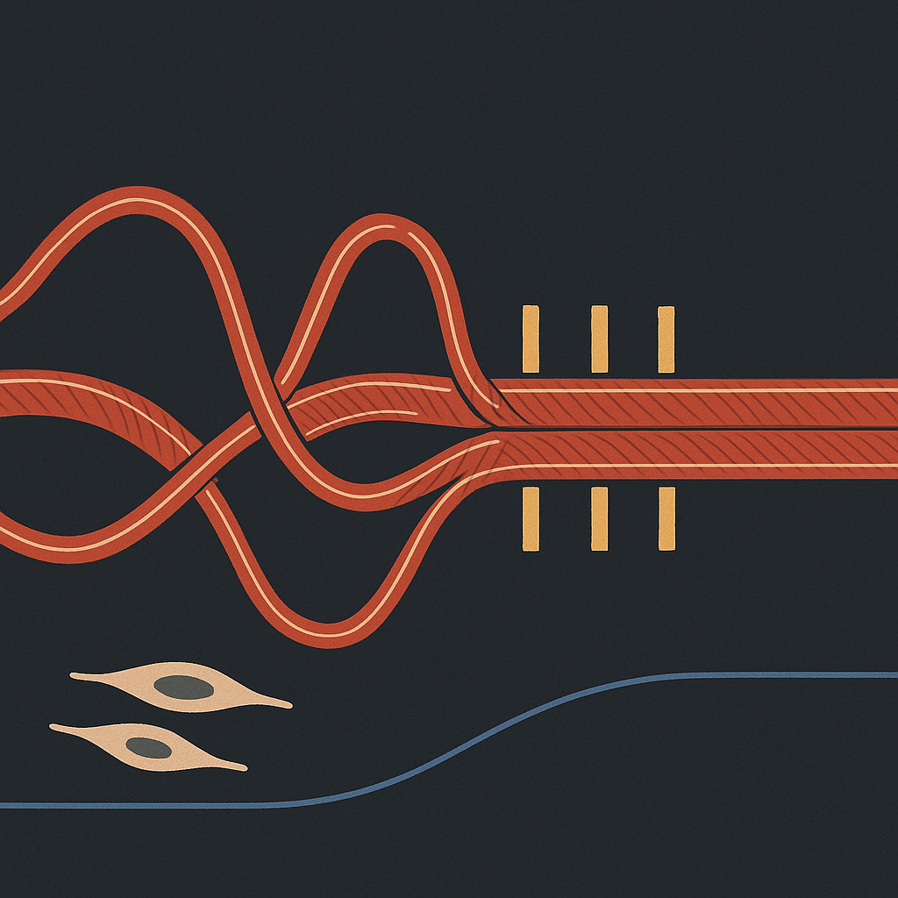
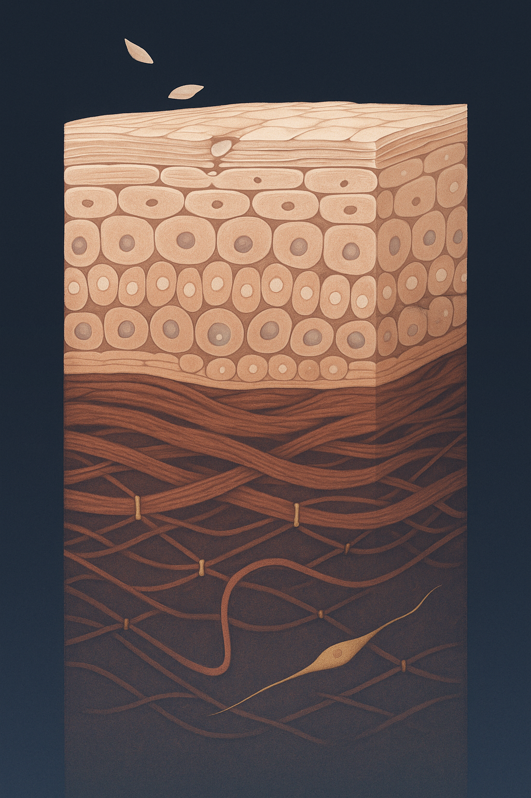

Review below. Reply approve to publish the Facebook post, or tell me edits.

You can do everything right and still notice it. Skin that is well hydrated, well looked after, plump enough in good light, and yet it does not bounce back the way it did at 25. Press a pillow crease into your cheek at 30 and it is gone by the time you have made coffee. Press the same crease at 50 and it can still be faintly there an hour later.
The usual explanation is that you have lost collagen. That is true, and it is only half the story.
The other half is that the collagen you still have is old. Not old in a sentimental sense. Old in a materials sense: the fibre is still there, still strong, and it no longer behaves the way it did when it was laid down.
Two clocks run in your skin, and they run at wildly different speeds.
The top clock is fast. The epidermis, the surface layer, renews itself in roughly a month. Cells are made at the base, migrate up, flatten, and shed. This is the layer that responds quickly to hydration, exfoliation and a good night's sleep, which is why surface change is the change you can see fastest.
The bottom clock is slow. Dermal collagen, the woven scaffold underneath, is one of the slowest-replaced structures in the body. Because you cannot simply watch it turn over, researchers date it chemically, measuring the slow conversion of amino acids in long-lived proteins. Using that method, Verzijl and colleagues (Journal of Biological Chemistry, 2000) estimated the half-life of human skin collagen at roughly 15 years. Other approaches land on different figures, but they agree on the order of magnitude: years, not weeks.
Read that again with your own face in mind. A large share of the fibre holding your skin up right now was laid down years ago, and it is still on duty. It has not been swapped out. It has been carrying load the whole time.
Here is the term, and here is the translation.
Cross-linking means that over time, chemical bridges form between neighbouring collagen fibres. Not new fibres. Little welds at the points where existing fibres cross each other.
Picture a rope ladder, brand new. Every rung and every crossing point can move independently, so the whole thing flexes, twists, and returns to shape. Now imagine that same ladder after someone has quietly glued every crossing point. Same amount of rope. Same number of rungs. Completely different behaviour. It has gone from a flexible woven mesh to something closer to a rigid mat.
Two everyday drivers do most of this work. Glycation is the slow reaction between sugars circulating in the body and long-lived proteins like collagen, and it happens in everyone, continuously, as a normal part of living. Cumulative ultraviolet exposure is the other, because UV both damages the fibres directly and switches on the enzymes that fragment them, leaving a scaffold that is being repaired badly rather than rebuilt cleanly.
No moralising required. This is chemistry running in the background for decades.
These two look different, and telling them apart is genuinely useful.
Thin skin looks translucent. You can see more of the vascular network through it, it crepes finely when you move it, and it feels insubstantial between the fingers.
Stiff skin behaves differently. It holds a fold. It settles into the same expression lines rather than fanning them out across the surface. Released, it returns slowly instead of snapping flat.
Most midlife faces are showing some of both at once, in different proportions in different areas. That is exactly why single-cause explanations never quite fit what you see in the mirror. "You have lost volume" explains some of it. "Your skin is drier" explains some of it. Neither explains why recoil specifically has changed, because recoil is a property of the material, not the amount.
There is a rough at-home way to watch this over time. It is not a diagnosis. It is a personal baseline.
Pinch a small fold of skin on the back of your hand between thumb and forefinger. Hold it for three seconds. Release. Count how long it takes to lie completely flat.
Three conditions matter, and they matter more than the number itself. Same time of day, same room temperature, same hand. Hydration and warmth both shift the result noticeably, so a test done in a cold bathroom at 6am is not comparable to one done after a hot shower.
Write the count down. Do not repeat it next week, because nothing meaningful will have changed. Repeat it in three months. The value of this test is entirely in comparing you to you across a slow interval, which is the same timescale the underlying biology actually works on.
Three things follow from the biology, and they are not the three things most skincare marketing suggests.
Protect the fibre you already have. If collagen is largely long-lived, then preventing damage to existing fibre is worth more than chasing replacement. Daily broad-spectrum SPF is the highest-leverage habit in this entire article, because it addresses both the direct damage and the enzymes that fragment the scaffold.
Support ongoing remodelling rather than expecting a rebuild. Your skin is continually making small repairs. Habits that support that work are supporting a slow, incremental process, not triggering a replacement.
Judge everything on a months timeline. You are asking a slow system to change. Six weeks of anything is barely a data point down there, whatever the surface looks like.
In the same category as SPF and consistency, not in the "undo it tonight" category.
Here is the honest boundary first: nothing topical, and nothing available at home, removes cross-links that have already formed. What light-based routines are reasonably asked to do is support the ongoing remodelling described above, in small daily doses, assessed over weeks rather than days. Judged that way, they are a maintenance habit. Judged as a repair tool for fibre that stiffened over twenty years, they will disappoint. It is a cosmetic device, not medicine.
Old collagen is not a failure. It is a scaffold that has been holding you up for decades. Worth protecting on those grounds alone.
If light-based maintenance is the part you are weighing up, and you ever want a closer look at the mask and the full spec, it is here.

Most of the collagen holding up your face today was made years ago.
The surface of your skin renews itself in roughly a month. The scaffolding underneath does not. Dermal collagen has a half-life measured in years, so it is long-lived structure, not something restocked weekly.
Which makes the interesting question less about how much you have, and more about what condition it is in.
Over time, small bridges form between neighbouring fibres. This is cross-linking. A flexible woven mesh slowly starts behaving like a stiff mat. Same fibre. Glued at every crossing.
The two everyday drivers are cumulative sun exposure and glycation. No villains, just time and habit.
Which is why protecting the fibre you already have (daily SPF) outranks anything promising to rebuild it. You are looking after a scaffold that has been on duty for decades.
It also explains a frustration a lot of people have: hydration makes skin look better but does not change recoil. Plumping the surface and un-stiffening the scaffold are two different jobs.
Thin skin loses volume. Stiff skin loses spring. Most faces show a bit of both.
Try the recoil test. Pinch the skin on the back of your hand, hold three seconds, release, and watch how quickly it flattens. Same hand, same time of day. Compare it to yourself in three months, not to anyone else.
Save this if you want to run the three-month comparison.
A slow system responds on a slow timeline, so anything aimed at collagen is judged in months, not days. Cosmetic devices included.
Try the test now and tell us what you noticed. Instant, slow, or somewhere in between?
## First comment
If you ever want a closer look at the mask and the full spec, it is here: https://redermis.com.au/products/red-light-therapy-face-neck-mask
## Hashtags
#skinhealth #collagen #skinlongevity #skinscience #redlighttherapy
IMAGE PROMPT:
Flat two-dimensional editorial science illustration, vector-like precision, Scientific American / Quanta, square 1:1. Deep charcoal-slate ground. One horizontal collagen fibre bundle runs the full width from left edge to right edge, drawn in fine ivory outline filled deep terracotta-red, with regular fine cross-banding lines inside it (the D-banding of collagen), clearly a drawn biological fibre and explicitly NOT rope, twine, jute, braid or woven cord. At the LEFT the fibre waves in tall open loops with wide clear gaps and a second fibre crossing loosely over it. Moving right, short blunt matte-gold struts appear at each crossing, increasing from one to roughly eight, while the wave height flattens step by step in exact proportion until the right end is almost straight and locked tight. One single continuous indigo hairline runs beneath the fibre tracing the falling crest height so the loss of spring is measurable by eye. Two small spindle-shaped fibroblast cells lie in the open space at the left end and none at the right. Flat colour fills, no shading gradients, no depth of field, no texture photography. Palette strictly charcoal-slate, terracotta-red, matte gold, one indigo hairline, small ivory accents. Legible and bold at 150 pixels. Absolutely no text, letters, numbers, tick marks, axes, arrows or callouts. No people, faces, hands, product, mask, LED device, screen, gadget, bracket, clamp, buckle or any machined hardware. No rope, jute, twine, wicker, basketry, knots or fabric weave. No glow bloom, halo, sunburst or lens flare. No photographic realism and no 3D render.

Your collagen does not get replaced every month. It gets older with you.
The surface of your skin renews in weeks.
The scaffold underneath lasts years.
So the real question is not only how much collagen you have. It is how old it is.
Over time, small bridges form between the fibres. A flexible weave slowly starts behaving like a stiff mat.
Same amount of fibre. Different behaviour.
That is why hydration changes how skin looks and not how fast it springs back.
Thin skin looks crepey. Stiff skin holds a fold.
Try it: pinch the back of your hand, hold for three seconds, let go, watch it flatten. Same hand, same time of day. Compare it to yourself in three months, not tomorrow.
Save this so the three-month comparison actually happens.
Slow structure, slow timeline. Anything aimed at collagen is judged in months, and protecting what you have (SPF, every day) beats chasing what you lost.
We make a light therapy mask. Details in the bio if you are curious. Cosmetic device, not medicine.
Instant, slow, or somewhere in between? Tell me what yours did.
## Hashtags
#skinscience #collagen #skinlongevity #redlighttherapy #skincareaustralia #ausskincare #spfdaily #skincaretips #ageingwell
IMAGE PROMPT:
Editorial science illustration, vertical 4:5 plate, elegant and calm, in the spirit of Scientific American and New Scientist. THE SUBJECT: two speeds inside one piece of skin. The surface rebuilds itself constantly. The scaffold underneath barely changes.
ONE single continuous, histologically correct skin cross-section fills the full height of the frame on a deep ink-navy ground, with slim clean margins and nothing cropped awkwardly. No panels, no dividing rules, no stacked registers: one specimen, read top to bottom, where the RATE of change differs by depth.
UPPER FIFTH, the fast zone, cool pearl and soft rose-gold: a stratum corneum of flattened corneocyte bricks in fine parallel lipid-lamellae mortar, with a few corneocytes at the very top lifting free and shedding away from the surface as small pale flakes. Beneath it the living epidermis in correct differentiated strata, granular then spinous then a basal row of small nucleated cells sitting on a clear basement membrane, with one basal cell caught mid-division and a short quiet upward drift of newly formed cells behind it. This zone is bright, active, in visible motion.
LOWER FOUR FIFTHS, the slow zone, deep terracotta and warm charcoal, visibly still: a vast dermis of banded collagen bundles woven in interlacing layers, dense and long-resident, their crossing points pinned by small restrained brass cross-link struts, wave amplitude flattened, fine gold elastin filaments fraying here and there between them. One looping capillary. Exactly two slender spindle-shaped fibroblasts lying flat in the mat, and from one of them a single thin pale-gold new filament being laid into that enormous old lattice, tiny by comparison. The contrast in scale between the one new filament and the whole old mat is the emotional point.
Composition: a clear tonal step at the basement membrane between the luminous quick upper zone and the deep static lower zone, so a reader instantly sees fast above, slow below. Structured, textbook-plate clarity, bold enough shapes to read at 150 pixels.
Palette strictly limited: ink-navy ground, cool pearl and rose-gold in the epidermal zone, deep terracotta and warm charcoal in the dermis, pale gold for the one new filament, restrained brass for cross-links.
STRICTLY FORBIDDEN: any text, letters, numbers, words, labels, legends, arrows, axes, tick marks or callout bubbles. No people, no faces, no hands, no product, no mask, no LED device, no technology. No glow bloom, halos, sunbursts or lens flare. No honeycomb or hexagonal dermis. No rope, jute, twine, wicker, basketry or wood grain. No trees, branches, roots or botany. No neuron-like branching or dendritic cells. No floating organelles. No photographic realism, no 3D render, no atmospheric blur.
## Title
Why Skin Stops Springing Back (It Is Not Just Lost Collagen)
## Description
Most of the collagen in your skin was made years ago. Its half-life is years, not weeks. So what changes is its condition, not the amount. Cross-links form between fibres and the weave stiffens. Hydration improves how skin looks, never how it recoils. Try the recoil test: pinch the back of your hand, hold three seconds, release, count how long it takes to flatten. Same hand, same time of day. Repeat in three months. Any collagen habit is judged on that timeline. Pin this for your skincare notes.
## Hashtags
#SkinScience #CollagenHealth #RedLightTherapy #LEDFaceMask #SkinLongevity
## CTA
If you want a closer look, it is here: https://redermis.com.au/products/red-light-therapy-face-neck-mask
## Image
Reuses the Instagram image (generated at 1024x1536, a 2:3 vertical crop, which is Pinterest's preferred ratio).